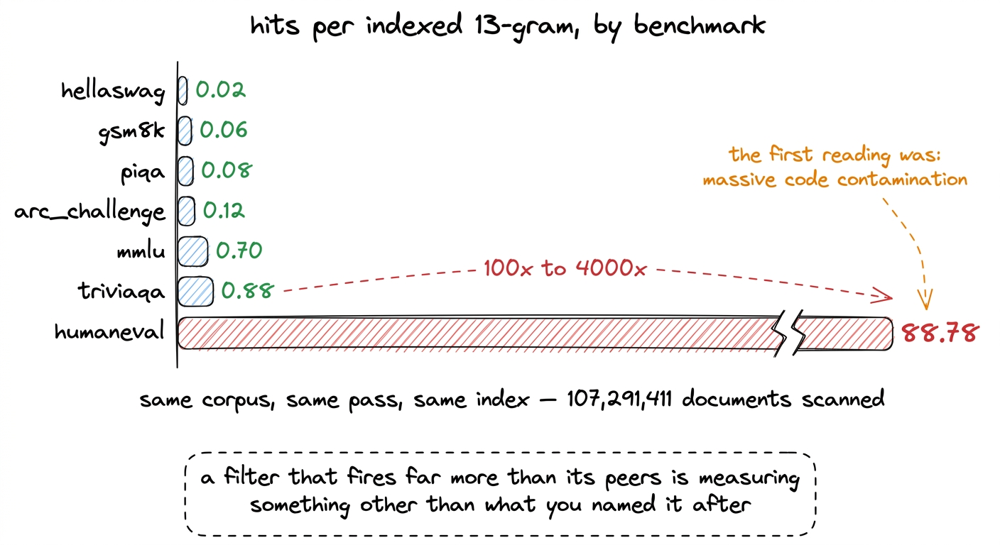
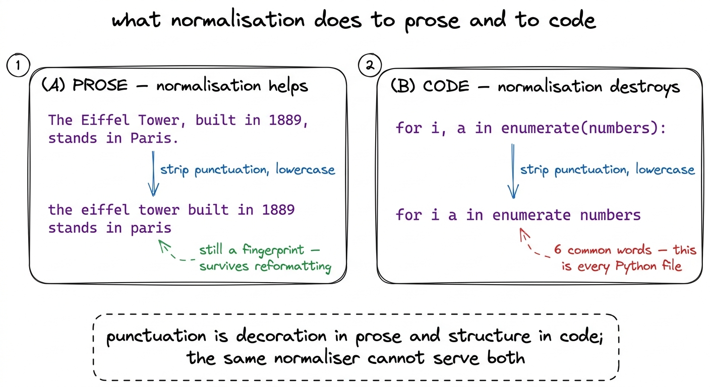
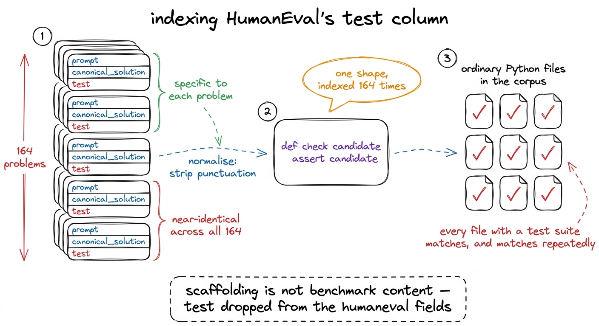
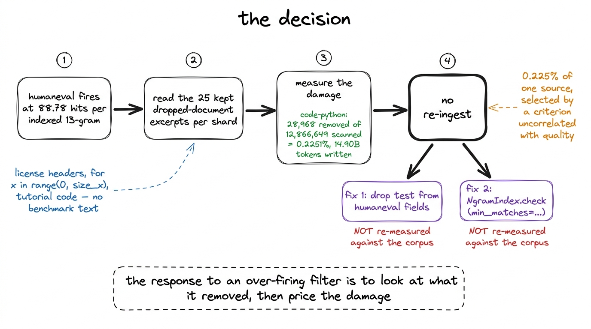
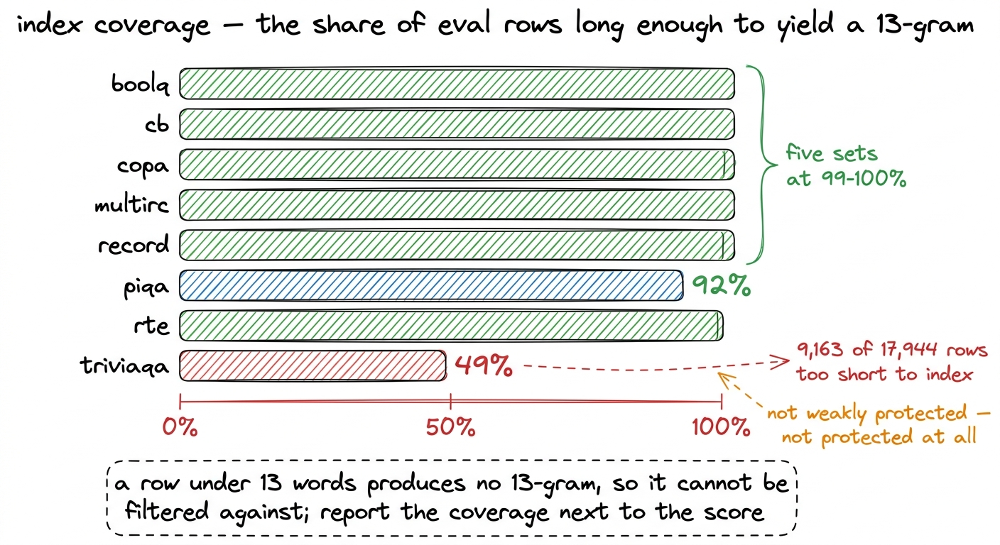

When a filter fires on nothing
HumanEval matched 88.78 times per indexed n-gram against HellaSwag's 0.02, and every removed document was generic Python. What that measured, why it was not leakage, and the coverage limit we report rather than bury.
The decontamination pass produced one report, and the report produced one row that did not fit. Across the whole corpus, 107,291,411 documents were scanned and 138,064 were removed for containing a 13-word window that also appears in one of eight benchmark test sets. The per-source removal rates came out in the shape the previous chapter describes as believable: the maths corpora dropped around ten times more than the web, and nothing dropped uniformly.
The per-benchmark column is where the trouble was. Raw match counts are not comparable across benchmarks, because a benchmark with a larger indexed footprint has more chances to match. So the counts were divided by the number of unique 13-grams each set contributed to the index, which gives a rate rather than a total.1 The index holds 2,398,082 unique 13-grams across all eight sets, 24 MB on disk. MMLU contributes far more of them than HumanEval does, so an unnormalised comparison between the two says more about split sizes than about contamination.
| benchmark | hits per indexed 13-gram |
|---|---|
| hellaswag | 0.02 |
| gsm8k | 0.06 |
| piqa | 0.08 |
| arc_challenge | 0.12 |
| mmlu | 0.70 |
| triviaqa | 0.88 |
| humaneval | 88.78 |
Six of the seven sets that matched anything sit between 0.02 and 0.88. HumanEval sits at 88.78, which is between roughly one hundred and four thousand times the rate of every other set in the same suite, measured in the same pass, against the same corpus.

figure rendering · Match rate per indexed n-gram across the eight-set suite. WinoGrande iThe first reading, and why it was plausible
The first reading was that the Python corpus was heavily contaminated with HumanEval. That reading is worth stating in full, because it was reasonable and it was wrong, and the gap between those two facts is what this chapter is about.
HumanEval is 164 hand-written programming problems, each with a docstring prompt and a canonical solution. It is one of the most-copied evaluation sets in existence. Its problems appear in blog posts, in tutorial repositories, in the README of every code model, and in the training-data audits of half the papers that cite it. A Python corpus scraped from public repositories containing HumanEval solutions is not a surprising hypothesis. It is close to the default expectation.
The rate also pointed the right way for that story. Contamination should concentrate where the benchmark's subject matter concentrates, and it did: the two maths corpora dropped at 0.7239% and 0.6747% against 0.0280% for general web text. A code benchmark firing hardest against the code corpus is the same pattern, one source over.
What did not fit was the magnitude. A rate two orders of magnitude above the next-highest set is not a stronger version of the same phenomenon. Contamination that severe would mean the Python corpus was substantially made of benchmark text, and the removal rate for that source was 0.2251%. Those two claims cannot both be true. Either almost every matching document was being counted many times, or the matches were not what the word "match" implies.
Reading what came out
The ingest workers keep the first 25 dropped documents per shard, with the matching benchmark, the number of matching 13-grams, and a 400-character excerpt. That sample existed for exactly this situation, and it settled the question in the time it took to read it.
if len(st["dropped_examples"]) < 25:
st["dropped_examples"].append({
"benchmarks": [idx.names[int(i)] for i in ids],
"ngram_hits": int(hits.size),
"excerpt": text[:400],
})The documents attributed to HumanEval were license headers, loop boilerplate of the form for x in range(0, size_x), and tutorial code. They were ordinary Python files. None of them contained a HumanEval problem, a HumanEval docstring, or a HumanEval solution. They contained Python that looks like all other Python.
That observation eliminates hash collision as well, which was the other candidate explanation. A collision produces a document with no visible relationship to the benchmark. These documents had a visible relationship: they shared real, readable, common code with the indexed text. The filter was working exactly as specified. The specification was the problem.
Cause one: the normaliser is built for prose
The previous chapter described the byte translation table every document and every benchmark row passes through before any hashing happens: A-Z lowercased, a-z and 0-9 kept, every other byte replaced by a space.
_XLAT = np.full(256, 32, dtype=np.uint8) # everything -> space
for _c in range(ord("a"), ord("z") + 1):
_XLAT[_c] = _c
for _c in range(ord("A"), ord("Z") + 1):
_XLAT[_c] = _c + 32 # A-Z lowercased
for _c in range(ord("0"), ord("9") + 1):
_XLAT[_c] = _cFor prose that is the right choice, and it is what makes the filter match copies rather than only originals. A benchmark question that has passed through a content management system, a PDF extractor and a blog theme differs from the original in case, punctuation and whitespace, and stripping those three away is precisely what lets the match survive.
For code it removes most of the signal. Punctuation in Python is not decoration. Commas, colons, parentheses and brackets carry the structure, and the identifiers that remain are drawn from a small shared vocabulary of for, in, range, def, self, return, len, i, x, n. Consider one line:
for i, a in enumerate(numbers): -> for i a in enumerate numbersSix words survive from a line that was structurally specific. Chain a few such lines together and the 13-word window that results is not a fingerprint of any particular file. It is a fingerprint of Python.

figure rendering · The same normalisation step, applied to a sentence and to a line of PyCause two: we indexed the test harness
The second cause is a choice in the benchmark registry rather than in the hashing.
Deciding which columns of a benchmark row go into the index is a judgement about what a contaminated document would actually contain. For HellaSwag and PIQA, the answer options are the benchmark, so they must be indexed. For GSM8K, the worked solution is the leak. For TriviaQA, the answer aliases are single entities like a city name, so only the questions are indexed. For HumanEval, the original registry entry indexed the prompt, the canonical solution, and the test column.
The test column is not benchmark content in the sense the other columns are. It is the harness that checks a candidate solution, and across all 164 problems it is close to the same few lines of scaffolding: a check function, a candidate argument, a sequence of asserts. Indexing it puts that scaffolding into the index 164 times over, and then normalisation strips out the punctuation that distinguished one instance of it from another.
The result is a set of index entries that are, after normalisation, generic assertion boilerplate. Any Python file in the corpus containing a test suite of a similar shape matches them, and matches them repeatedly, because the pattern recurs throughout a single file.

figure rendering · The second cause. A column that is nearly constant across the benchmarTwo causes that multiply
Either cause alone would have raised HumanEval's rate. Together they multiply, and the multiplication is what produces a figure like 88.78 rather than something in the range of two or three.
Normalisation lowers the specificity of every code n-gram in the index. The test column then fills the index with the least specific code in the benchmark, repeated. The rate is a count of matching n-grams rather than matching documents, so a single ordinary Python file with a handful of test functions contributes many hits, and the denominator is small because HumanEval is only 164 problems.2 The worker accumulates hits_by_benchmark by adding the number of matching windows, not by adding one per dropped document. That is the correct choice for a diagnostic, since it distinguishes a document that shares one window from one that shares fifty, and it is the reason a rate above 1.0 is arithmetically possible at all. Every term in that arithmetic pushes in the same direction.
The registry entry now records the reasoning next to the fields, so that a future reader does not have to reconstruct it:
Benchmark(
"humaneval",
[Candidate("openai/openai_humaneval", None, "test"),
Candidate("openai_humaneval", None, "test")],
# `test` DROPPED after measurement. It is near-identical scaffolding
# across all 164 problems (`def check(candidate): assert candidate(...)`),
# so once normalisation strips punctuation its 13-grams match ordinary
# Python everywhere.
fields=["prompt", "canonical_solution"],
note="test scaffolding excluded — it generated boilerplate false positives",
)What it cost, and what we did
The question that decides the response is not how badly the filter misbehaved. It is how much corpus was lost.
The Python source removed 28,968 documents from 12,866,649 scanned, a rate of 0.2251%, and wrote 14.90B tokens. If every one of those removals were a false positive attributable to HumanEval, the damage is a fifth of one percent of the code corpus. There is no plausible mechanism by which losing 0.225% of one source, selected by a criterion uncorrelated with quality, changes what the model learns. Re-ingesting the source would have cost real compute and real time to recover something that is not measurable at the far end.3 The cost of being wrong in the other direction was also bounded here. HumanEval and GSM8K are post-training benchmarks and were deliberately not run on r1, which is a base model that has only ever done next-token prediction. Removing too much Python on HumanEval's account could not have flattered a HumanEval score, because no HumanEval score was ever produced.
So no re-ingest was performed. Two changes went into the code for any future run. The first is the field list above, with test dropped. The second is a threshold on NgramIndex.check, so that a corpus can require several matching n-grams before a document is discarded rather than one:
def check(self, text: str, n: int = NGRAM_N,
min_matches: int = 1) -> tuple[bool, dict[str, int]]:
"""(contaminated, {benchmark: n_matching_ngrams}).
`min_matches` guards against incidental collisions. One shared 13-gram is
decisive for prose but not for code: normalisation strips punctuation, so
de-punctuated Python idiom collides across unrelated files. Raising this
for code corpora trades a little recall for a lot of precision.
"""The default stays at 1, so prose sources behave as before and the change is opt-in per corpus. Neither fix has been re-measured against the corpus. The 104.80B-token corpus, from which r1 drew the 5,000,003,584 tokens it trained on, was produced by the pipeline as it stood during the run, with the test column indexed and a single matching n-gram sufficient to drop a document. What is in this chapter is a diagnosis and a code change, not a second measurement, and the two should not be read as the same thing.

figure rendering · The path from the anomalous number to the decision. The measurement thThe limit that has nothing to do with code
The same report carries a second scope limit, and it belongs next to every benchmark number in this book rather than in a footnote at the back.
A 13-gram filter can only remove text it can index. A benchmark row shorter than 13 words produces no 13-gram at all, so it never enters the index, and no document in the corpus can ever be matched against it. The row is not weakly protected. It is not protected.
The extractor counts those rows separately for exactly this reason, and the report emits the count per benchmark:
coverage[name] = {
"rows": rows,
"rows_indexed": rows - short,
"rows_too_short": short,
"coverage": (rows - short) / rows if rows else 0.0,
"ngrams": s.get("ngrams", 0),
}TriviaQA is 49% covered. Of its 17,944 rows, 9,163 are too short to yield a single 13-gram, which follows directly from the shape of the set: a TriviaQA question is usually one line, and only the questions are indexed because the answer aliases are single entities. PIQA is the next lowest at 92%. Five of the eight sets sit at 99 to 100%.

figure rendering · Coverage per benchmark. The uncovered half of TriviaQA is a limit of tThis is not a defect that can be repaired by tuning. It is what a 13-gram method is. A shorter n would cover more rows and would also match ordinary English, which trades a stated limit for an unstated flood of false positives of exactly the kind this chapter has just finished diagnosing. The workable response is to publish the coverage number beside the accuracy number, so a reader can see which claim is fully supported and which is half supported.
WinoGrande's zero
One set recorded no matches at all, and the report warned about it, because a benchmark with zero hits across 107 million documents usually means a broken extractor rather than a clean corpus. The gate treats that as a warning rather than a failure:
if decon["benchmarks_with_zero_hits"]:
warns.append(f"no n-gram hits for {decon['benchmarks_with_zero_hits']} — "
"check those extractors before trusting their scores")The warning fired on WinoGrande, and the zero is plausibly genuine. WinoGrande sentences are short, and the two options differ by a single word, so the indexed text is both small and highly specific. The index self-check gives some assurance that extraction worked, since every benchmark row tested against the index it was built from was detected, 1,414 of 1,414.4 The self-check exists because a renamed column is the quiet way decontamination becomes a no-op. The extractor still runs, still produces rows, and silently indexes empty strings. Building the index and then asking it to find its own source rows catches that in seconds. What the check cannot tell us is whether a longer WinoGrande row would have matched something, because there were few long rows to begin with.
We report it as a warning that was raised, examined, and left standing rather than as a result.
What this generalises to
Three things from this episode transfer to any filter, in any pipeline.
A component that fires far more than its peers is measuring something other than what you named it after. The name on the filter was "HumanEval contamination". What it measured was "resembles de-punctuated Python". Those two quantities agree on the benchmark rows and diverge everywhere else, and the divergence only becomes visible when the rate is compared against sibling rates in the same run. Comparing HumanEval's match count to its own expectation would have taught us nothing, because nobody had an expectation for it. Comparing it to seven other sets measured identically took one column of arithmetic.
Look at what was removed before deciding what the number means. The sample of dropped documents cost nothing to keep and settled a question that no amount of further reasoning about hash functions would have settled. Any filter that discards data should retain a readable sample of what it discarded, with attribution, because the sample is the only evidence that distinguishes a working filter from a filter that works on the wrong thing.
A high catch rate is not a result. It is easy to read 88.78 as the filter succeeding, and to write the sentence about how much contamination was caught in the Python corpus. That sentence would have been in this book, it would have been wrong, and nothing downstream would ever have contradicted it, because the benchmark it referred to was never run. The measurement that mattered was not the one that looked impressive. It was the ratio of removed documents to scanned documents in the affected source, which came to 0.225%, and told us the correct response was to fix the code, write down that the fix is unverified, and move on.